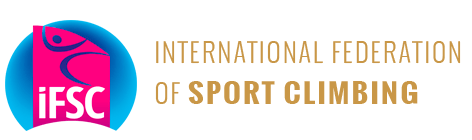

Organizations
- Home
- Organizations
- IFSC

Sport Climbing will be brought to millions of people across Europe after the International Federation of Sport Climbing (IFSC) and Discovery Sports announced a new three-year partnership to broadcast all IFSC World Cup and World Championship events on discovery+*, Eurosport App and Eurosport’s linear channels.The 2022 IFSC World Cup Series starts with the IFSC Boulder World Cup in Meiringen, Switzerland, scheduled from 8 to 10 April in the eastern Bernese Oberland region of Switzerland. The IFSC will continue its delayed free streaming of events via The Olympic Channel, to be shown 24 hours after the end of each live round within each event.